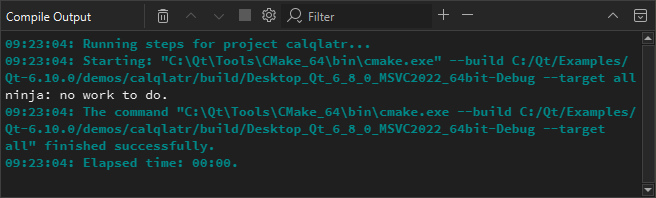
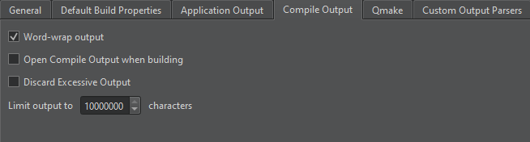

Compile Output
Compile Output shows a more detailed version of information displayed in Issues.

Double-click a file name in an error message to open the file in the code editor.
To cancel the build, select the Cancel Build button.
To copy the output to the clipboard, select Select All in the context menu, and then select Copy. Save the output as a file if you want to examine it later without having to build the project again. This is useful for large projects that take a long time to build.
Compile Output Preferences
To specify whether to open the Compile Output view on output when building applications:
- Open the preferences:
- In the Compile Output view, select
 (Configure).
(Configure). - Select Preferences > Build & Run > Compile Output.

- In the Compile Output view, select
- Select Open Compile Output when building.
- Select Discard excessive output to discard compile output that continuously comes in faster than it can be handled.
- In Limit output to, specify the maximum amount of build output lines to display.
See also View output, Add custom output parsers, Parse build output, and Kits.